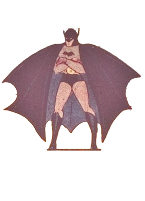

Welcome to Gothamites
Your source for everything Gotham
This site is dedicated to Batman himself, his allies, his lovers, and his enemies!
Meet The Bat
Bruce Wayne (Batman) – First appeared in Detective Comics #27 (May 1939). Bruce Wayne is Gotham City’s billionaire playboy, philanthropist, and heir to the Wayne family fortune. Orphaned at a young age after the murder of Thomas and Martha Wayne, Bruce dedicated his life to combating crime and preventing similar tragedies. As Batman, he operates as a nocturnal vigilante, using peak human conditioning, advanced martial arts, detective skills, and cutting-edge technology to combat Gotham’s criminal underworld. His dual identity allows him to navigate both high society and the criminal element, blending charm and influence as Bruce Wayne with relentless focus and strategic planning as Batman. His relationships are defined by mentorship, camaraderie, and emotional complexity, including protégés in the Bat-Family and romantic connections with figures like Selina Kyle, Talia al Ghul, and Zatanna. Batman maintains a strict moral code, refusing to kill while pursuing justice, making him both feared by criminals and a symbol of hope for Gotham’s citizens.
Real Life History
Batman was created in 1939 by artist Bob Kane and writer Bill Finger, debuting in Detective Comics #27. While Kane came up with the concept, it was Finger who shaped Batman into the dark, tragic figure we know today — giving him his cowl, Gotham City, and his origin as Bruce Wayne, a man driven to fight crime after witnessing his parents’ murder. Inspired by pulp heroes like The Shadow and Zorro, Batman quickly became one of DC Comics’ most popular characters.
During the early years, Batman stories were gritty and mysterious, but by the 1950s and 1960s they turned campy under the Comics Code Authority. The 1966 Batman TV show starring Adam West cemented this lighter image with its colorful villains and over-the-top humor. In the 1970s, writers Dennis O’Neil and artist Neal Adams restored Batman’s darker tone, emphasizing his detective skills and psychological depth. This shift paved the way for classic modern stories such as Frank Miller’s The Dark Knight Returns and Year One, which redefined Batman as a brooding antihero for adult audiences.
Batman’s popularity exploded again with Tim Burton’s 1989 Batman film, followed by the critically acclaimed Batman: The Animated Series in the 1990s. Then, Christopher Nolan’s Dark Knight Trilogy (2005–2012) reinvented the character for a new generation, grounding him in realism and exploring the man behind the mask. The Dark Knight (2008) became a cultural phenomenon, winning two Oscars and setting the standard for superhero films.
In recent years, Ben Affleck’s portrayal in the DC Extended Universe and Robert Pattinson’s The Batman (2022) have shown how flexible and timeless the character remains. Across more than eight decades, Batman has evolved from pulp hero to global icon — a symbol of justice, fear, and human determination that continues to inspire audiences around the world.